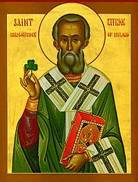
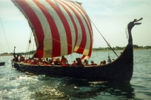
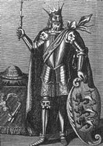
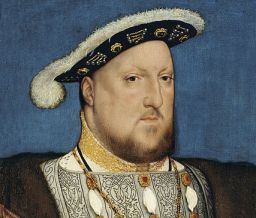

BCE : 2000
Bronze tools and weapons begin to be used in Ireland.
Bronze tools and weapons begin to be used in Ireland.
The Iron Age begins. Celtic peoples begin to arrive on the island from mainland Europe.
Ireland is ruled by a large number of small kingdoms.
According to legend, Cormac mac Airt rules Ireland as the High King.
Niall of the Nine Hostages becomes High King.
|
Saint Patrick arrives in Ireland and introduces Christianity. |  |
Saint Patrick dies.
|
The Vikings invade Ireland attacking monasteries and towns along the coast |  |
The Vikings establish settlements in Ireland in the early 900s including the city of Dublin.
|
The Vikings are defeated by Irish King Brian Boru. |  |
King Henry II of England comes to Ireland and claims the land as part of his empire.
Prince John Lackland is made Lord of Ireland by King Henry II.
Dublin Castle is built by King John of England.
King Henry III issues the Great Charter of Ireland.
The first meeting of the Irish Parliament in Dublin.
Scottish leader Edward Bruce arrives to help fight against the Norman leaders.
 |
The Black Plague strikes Ireland killing around 30% of the population. |
The Statutes of Kilkenny are passed to keep the English and Irish cultures from merging. The English and Irish are forbidden to intermarry.
The Blarney Stone is set into a tower of Blarney Castle.
TThomas FitzGerald rebels against England. He is hung for his offenses three years later.
|  | The Kingdom of Ireland is established with King Henry VIII of England as king. |
King Henry VIII dies.
The Nine Years' War begins between Ireland and England. The Irish are eventually defeated.
The Irish led by Hugh O'Neill are defeated at the Battle of Kinsale.
Many of the Irish Earls flee to Spain in what is called the "Flight of the Earls."
Many of the Irish Earls flee to Spain in what is called the "Flight of the Earls."
The Williamite War begins between the Jacobites (Catholics) and the Williamites (Protestants). The Williamites win.
Terrible famine strikes the land and hundreds of thousands die.
|
The Irish rebel with the help of the French. |
The Kingdom of Ireland becomes part of the United Kingdom of Great Britain and Ireland.
Catholics are given more freedoms through the Catholic Relief Act.
The first commercial railroad opens in Ireland.
The Great Irish Famine occurs when much of the potato crop is destroyed. Many Irish emigrate to other countries such as the United States.
The Irish Republican Brotherhood rebels against British rule in what is called the Fenian Rising.
The Nine Years' War begins between Ireland and England. The Irish are eventually defeated.
The Easter Rising occurs. Members of the Irish Republican Brother seize government buildings in Dublin. Most of the rebel leaders are executed by the British.
Irish rebels called the Sinn Fein declare independence from Britain. The Irish Republican Army (IRA) begins to fight against British forces.
Northern Ireland is established as part of the United Kingdom. The rest of Ireland becomes the Irish Free State.
Civil war breaks out between the Irish Republican Army (IRA) and the National Army.
The Irish Free State is named Ireland by a new constitution.
Ireland is declared a free republic.
Ireland joins the United Nations.
The Troubles begin in Northern Ireland between the IRA and the loyalists. Constant violence between the two groups exists up until 1998.
Mary Robinson is elected President of Ireland. She is the first woman president of the country.
The Belfast Agreement is signed reducing the violence and putting an end to The Troubles.
Ireland adopts the Euro as its official currency.
Escape the everyday and unwind in paradise
-book your dream vacation today!
For any inquiries or to plan your dream getaway in Sabah, contact us through our website and let us assist you in creating unforgettable memories!
Please contact us: